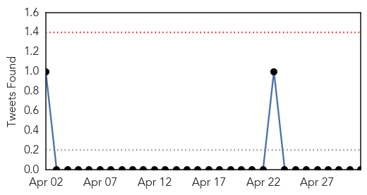
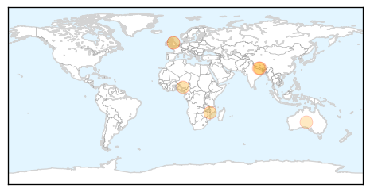

Chikungunya
30-Day Web Trend
0 alerts, 0 warnings
30-Day Twitter Trend
0 alerts, 0 warnings

Article Locations
Article Confidences

Top Articles:
Top Tweets:
-
No tweets found for May 01, 2015
Cholera
30-Day Web Trend
0 alerts, 0 warnings

30-Day Twitter Trend
0 alerts, 0 warnings

Article Locations
Article Confidences
Top Articles:
- 0.963
- KIA motors helps Malawi
- 0.933
- Cholera claims 5 more lives in Ebonyi
- 0.729
- Disease fears hit Nepal’s quake-affected homeless
- 0.722
- Disease fears hit Nepal's quake-hit homeless
- 0.697
- Historical people that died of curable things
- 0.648
- 7 famous people who should have been cryogenically frozen when they died
- 0.617
- Towns And Villages Totally Devastated And 90% Clinics And Schools Are Unusable In Nepal
- 0.579
- Nepal earthquake: Wales donates almost £900,000 to appeal
Top Tweets:
-
No tweets found for May 01, 2015